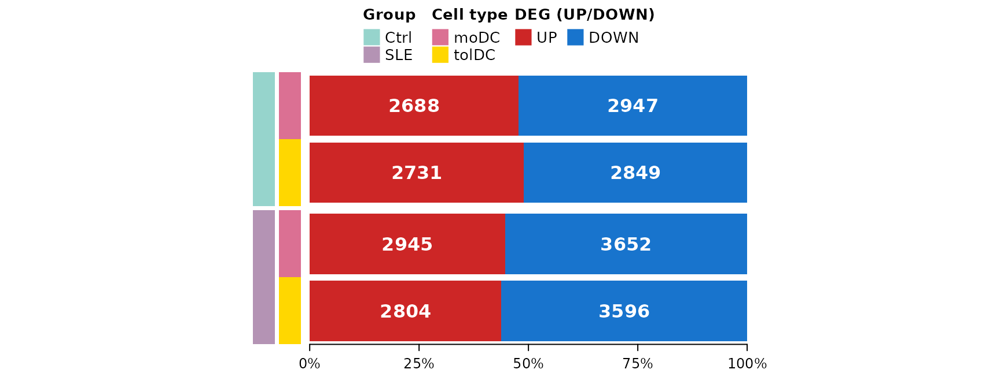
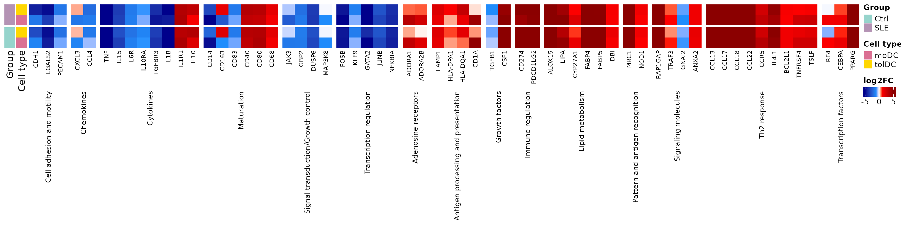
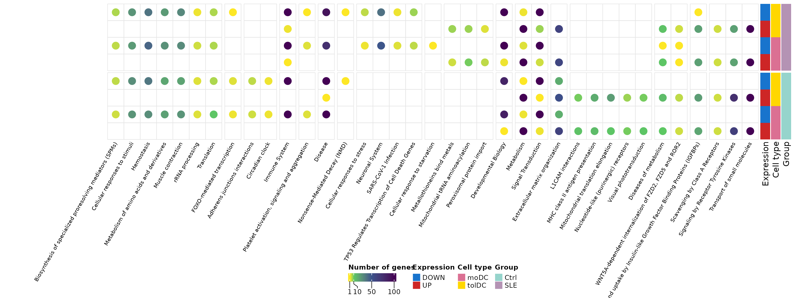
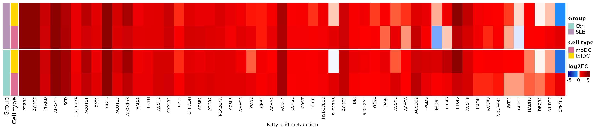
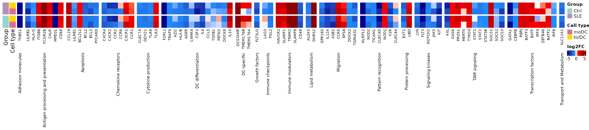
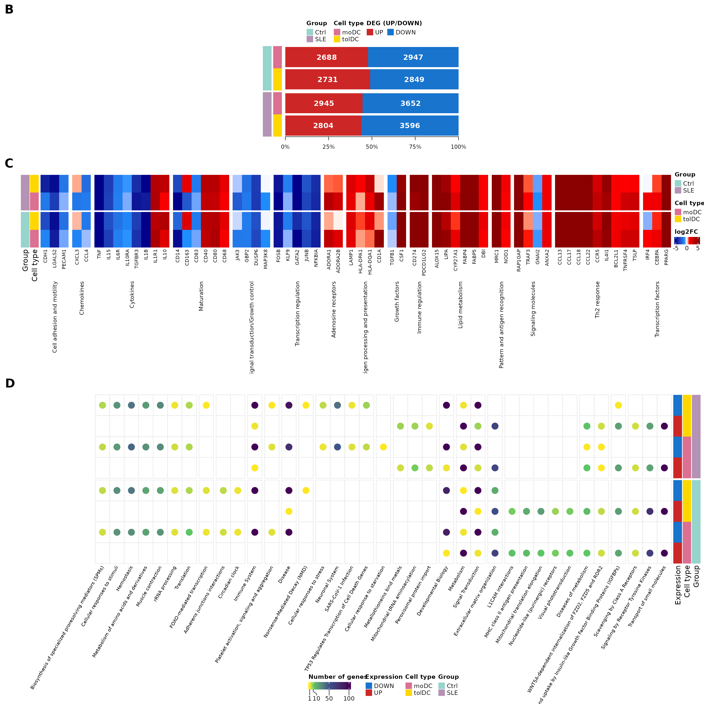
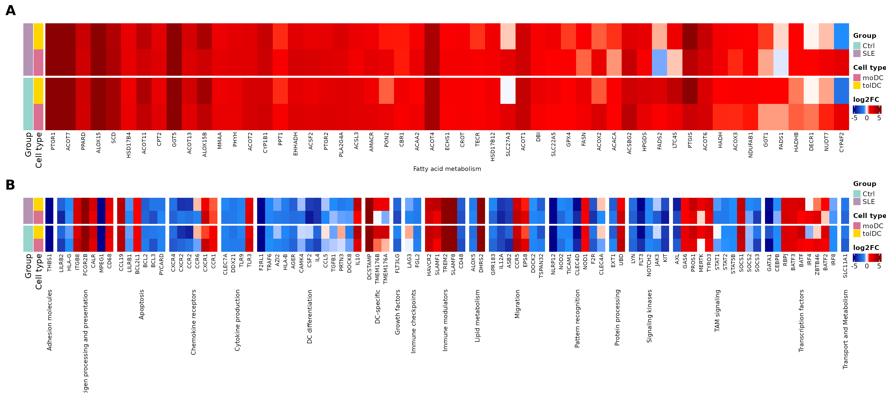

Lesson 5: Differentiation of monocytes into dendritic cells
Genes and processes that change during differentiation, in controls and patients
2026-10-28
Source:vignettes/l5_DEGs_monocytes_diff_en.Rmd
l5_DEGs_monocytes_diff_en.RmdWelcome
In the previous lessons we compared patients against controls within each cell type. Now we change the question: what changes when a monocyte differentiates into a dendritic cell?, and does this process happen in the same way in lupus patients as in controls?
What you need to know beforehand: you should have completed the lessons Differentially expressed genes between patients and controls and Biological functions of differentially expressed genes.
By the end you will be able to:
- Set up a comparison between cell types using a reference level (monocytes).
- Explain why a design may include covariates (disease activity, glucocorticoid dose).
- Validate an experiment by comparing your results with genes described in the literature.
- Summarize thousands of genes into Reactome pathways and identify metabolic changes.
- Reproduce Figures 4 and 5 of the article.
Estimated time: 1.5 hours.
Lesson map
flowchart LR A["de_celltype_results
moDC and tolDC vs monocyte"] --> B["4B. How many
genes change?"] A --> C["LFC matrix"] C --> D["4C. Genes described
in the literature"] A --> E["go_celltype_results
g:Profiler"] E --> F["4D. Reactome
pathways"] E --> G["5A. Fatty acid
metabolism"] C --> G C --> H["5B. Canonical dendritic
cell pathways"]
Glossary
These are the terms we will use. Come back here whenever you need to.
- Cell differentiation: the process by which a cell acquires a new identity and new functions.
- GM-CSF, IL-4, IL-10: cytokines added to the culture to direct differentiation.
- moDC: monocyte-derived dendritic cells; they activate the immune response.
- tolDC: tolerogenic dendritic cells; they promote immune tolerance.
- Reference level: the group against which the others are compared (here, monocytes).
- Covariate: a variable included in the model to account for its effect (for example, the dose of a drug).
- Within-group comparison: each cell type is compared against the monocytes of the same group (controls with controls, patients with patients).
- Metabolic reprogramming: a change in the metabolic pathways a cell uses when it changes function.
1. Setup
library(GeneExprLupusMx) # package data
library(tidyverse) # table manipulation and plots
library(ComplexHeatmap) # heatmaps
library(circlize) # color scales for ComplexHeatmap
library(grid) # drawing shapes inside the heatmaps
library(cowplot) # combining plots into a panelColors and thresholds (the same as in the previous lessons):
cell_color <- c(monocyte = "black", moDC = "palevioletred", tolDC = "gold1")
group_color <- c(Ctrl = "#96d4ccff", SLE = "#b493b4ff")
deg_color <- c(UP = "firebrick3", DOWN = "dodgerblue3")
lfc_color <- colorRamp2(c(-5, -1, 0, 1, 5), c("darkblue", "dodgerblue", "white", "red", "darkred"))
lfc_threshold <- 1
padj_threshold <- 0.052. Step 1: the experiment (Figure 4A)
Each volunteer’s monocytes were cultured in vitro with different cytokines to obtain two types of dendritic cells:
flowchart LR M(["Monocyte"]) -- "GM-CSF + IL-4" --> D(["moDC
monocyte-derived dendritic cell"]) M -- "GM-CSF + IL-10" --> T(["tolDC
tolerogenic dendritic cell"]) style M fill:#000000,color:#ffffff,stroke:#000000 style D fill:#db7093,color:#ffffff,stroke:#db7093 style T fill:#ffd700,color:#000000,stroke:#ffd700
Because each volunteer contributes all three cell types, we can ask which genes change upon differentiation by comparing each dendritic cell type against the monocytes. If differentiation worked, we expect to see large changes and known genes switching on or off.
3. Step 2: the analysis design
We make the comparison within each group: the controls’ dendritic cells against the controls’ monocytes, and the patients’ dendritic cells against the patients’ monocytes. This way, each group has its own reference.
The model is different in each group:
| Group | Design | Why? |
|---|---|---|
| Controls | ~ Cell_type |
We are only interested in the cell type |
| Patients | ~ SLEDAI_category + Cell_type + Dose_category |
Patients differ in disease activity and glucocorticoid dose; including them as covariates accounts for their effect |
Let us see how these covariates are distributed among the patients (one row per volunteer):
metadata_cleaned %>%
filter(Group == "SLE", Cell_type == "monocyte") %>%
dplyr::count(SLEDAI_category, Dose_category)
#> SLEDAI_category Dose_category n
#> 1 Activity 0 4
#> 2 Activity 1 9
#> 3 No_activity 0 2
#> 4 No_activity 1 2
#> 5 Zero 0 3
#> 6 Zero 1 3Dose_category indicates whether the patient receives
glucocorticoids (1) or not (0), and SLEDAI_category is her
level of disease activity. By adjusting for them, the effect of
Cell_type reflects differentiation and not these clinical
differences.
This is the analysis, the same one that generates the package
checkpoint (data-raw/lesson5_checkpoints.R). Running it
takes a few minutes:
library(DESeq2)
full_dds <- DESeqDataSetFromTximport(txi = filtered_txi,
colData = metadata_cleaned,
design = ~ Cell_type)
run_celltype_de <- function(group, design) {
dds_group <- full_dds[, full_dds$Group == group]
dds_group$Cell_type <- relevel(dds_group$Cell_type, ref = "monocyte")
dds_group$SLEDAI_category <- relevel(dds_group$SLEDAI_category, ref = "Zero")
dds_group$Dose_category <- relevel(dds_group$Dose_category, ref = "0")
design(dds_group) <- design
dds_group <- DESeq(dds_group)
lapply(c(moDC = "moDC", tolDC = "tolDC"), function(cell) {
res <- as.data.frame(results(dds_group, alpha = 0.05,
name = paste0("Cell_type_", cell, "_vs_monocyte")))
data.frame(gene = rownames(res), res, row.names = NULL)
})
}
ctrl <- run_celltype_de("Ctrl", ~ Cell_type)
sle <- run_celltype_de("SLE", ~ SLEDAI_category + Cell_type + Dose_category)
de_celltype_results <- list(Ctrl_moDC = ctrl$moDC, Ctrl_tolDC = ctrl$tolDC,
SLE_moDC = sle$moDC, SLE_tolDC = sle$tolDC)We use the checkpoint:
names(de_celltype_results)
#> [1] "Ctrl_moDC" "Ctrl_tolDC" "SLE_moDC" "SLE_tolDC"
head(de_celltype_results$Ctrl_moDC[order(de_celltype_results$Ctrl_moDC$padj), ])
#> gene baseMean log2FoldChange lfcSE stat pvalue
#> 11881 MRC1 68435.137 9.146538 0.2613979 34.99086 3.098523e-268
#> 17371 SLC7A8 4486.754 8.216655 0.2413625 34.04280 5.187183e-254
#> 6460 GPNMB 64903.360 9.443920 0.2816243 33.53376 1.553122e-246
#> 19706 TREM2 6019.286 10.614697 0.3247763 32.68310 2.714885e-234
#> 4641 ECM1 2623.108 7.358515 0.2325977 31.63623 1.172972e-219
#> 890 APOE 70848.544 11.967432 0.3869356 30.92874 4.907850e-210
#> padj
#> 11881 4.765219e-264
#> 17371 3.988684e-250
#> 6460 7.961823e-243
#> 19706 1.043806e-230
#> 4641 3.607826e-216
#> 890 1.257964e-206A positive LFC means the gene is higher in the dendritic cell than in the monocyte; a negative one means it is switched off upon differentiation.
4. Step 3: how many genes change? (Figure 4B)
With the same thresholds as in the previous lessons (|LFC| ≥ 1 and padj < 0.05), we split the DEGs of each comparison by direction:
deg_genes <- function(comparison, direction) {
df <- de_celltype_results[[comparison]]
df <- df[!is.na(df$padj) & df$padj < padj_threshold, ]
if (direction == "UP") df$gene[df$log2FoldChange >= lfc_threshold]
else df$gene[df$log2FoldChange <= -lfc_threshold]
}
deg_counts <- tibble(comparison = names(de_celltype_results)) %>%
mutate(Group = sub("_.*", "", comparison),
Cell_type = sub(".*_", "", comparison),
UP = sapply(comparison, function(x) length(deg_genes(x, "UP"))),
DOWN = sapply(comparison, function(x) length(deg_genes(x, "DOWN"))))
deg_counts
#> # A tibble: 4 × 5
#> comparison Group Cell_type UP DOWN
#> <chr> <chr> <chr> <int> <int>
#> 1 Ctrl_moDC Ctrl moDC 2688 2947
#> 2 Ctrl_tolDC Ctrl tolDC 2731 2849
#> 3 SLE_moDC SLE moDC 2945 3652
#> 4 SLE_tolDC SLE tolDC 2804 3596Each comparison is identified with two color columns (group and cell
type), and next to them we draw the proportion of up- and down-regulated
genes. We build it with ComplexHeatmap: a single-column
heatmap for the group, one annotation for the cell type, and
another with a barplot:
# proportion of up- and down-regulated genes in each comparison
deg_prop <- as.matrix(deg_counts[, c("UP", "DOWN")]) / (deg_counts$UP + deg_counts$DOWN)
# cell type, to the right of the group
celltype_anno <- rowAnnotation("Cell type" = deg_counts$Cell_type,
col = list("Cell type" = cell_color[c("moDC", "tolDC")]),
show_annotation_name = FALSE)
# barplot of proportions (UP first, DOWN second) with the number of genes inside.
# It is a custom annotation: it receives the rows of each block (index) and draws them.
deg_barplot <- rowAnnotation(
"DEG (UP/DOWN)" = AnnotationFunction(
fun = function(index, k, n) {
pushViewport(viewport(xscale = c(0, 1), yscale = c(0.5, length(index) + 0.5)))
y <- rev(seq_along(index)) # the first row goes on top
up <- deg_prop[index, "UP"]
down <- deg_prop[index, "DOWN"]
label <- gpar(col = "white", fontface = "bold")
grid.rect(x = 0, y = y, width = up, height = 0.9, just = "left",
default.units = "native", gp = gpar(fill = deg_color[["UP"]], col = NA))
grid.rect(x = up, y = y, width = down, height = 0.9, just = "left",
default.units = "native", gp = gpar(fill = deg_color[["DOWN"]], col = NA))
grid.text(deg_counts$UP[index], x = up / 2, y = y, default.units = "native", gp = label)
grid.text(deg_counts$DOWN[index], x = up + down / 2, y = y, default.units = "native", gp = label)
if (k == n) { # axis only below the last block
grid.xaxis(at = c(0, 0.25, 0.5, 0.75, 1), label = c("0%", "25%", "50%", "75%", "100%"),
gp = gpar(fontsize = 9))
}
popViewport()
},
var_import = list(deg_prop, deg_counts, deg_color),
subsettable = TRUE, which = "row", width = unit(10, "cm")),
show_annotation_name = FALSE)
# base heatmap: one column with the group, split into Ctrl and SLE
group_ht <- Heatmap(deg_counts$Group, name = "Group", col = group_color,
width = unit(5, "mm"), row_split = deg_counts$Group, row_title = NULL,
show_row_names = FALSE, show_column_names = FALSE,
right_annotation = celltype_anno)
ht_fig4b <- group_ht + deg_barplot
lgd_deg <- Legend(labels = c("UP", "DOWN"), title = "DEG (UP/DOWN)",
legend_gp = gpar(fill = deg_color), nrow = 1)
draw(ht_fig4b, heatmap_legend_list = list(lgd_deg), merge_legends = TRUE,
heatmap_legend_side = "top", annotation_legend_side = "top",
padding = unit(c(10, 2, 2, 2), "mm")) # bottom margin for the axis
Thousands of genes change in each comparison, compared with the 94 that change between patients and controls (lesson 3). Differentiation is, by far, the largest transcriptomic change in the study, just as we saw in the PCA of lesson 2. Patients have somewhat more down-regulated genes than controls.
Challenge 1. How many genes go up in all four comparisons (moDC and tolDC, in controls and patients)? And how many go down in all four?
Hint: Reduce(intersect, ...) applied to a list
of vectors.
Show solution
up_all <- Reduce(intersect, lapply(names(de_celltype_results), deg_genes, direction = "UP"))
down_all <- Reduce(intersect, lapply(names(de_celltype_results), deg_genes, direction = "DOWN"))
c(UP = length(up_all), DOWN = length(down_all))
#> UP DOWN
#> 1924 2164More than half of the DEGs in each comparison are shared: there is a common differentiation program that does not depend on the type of dendritic cell or on the group.
5. An LFC matrix for all the DEGs
For the next plots we need a matrix with the LFC of each gene in the four comparisons. We include the genes that are DEGs in at least one comparison:
all_deg <- unique(unlist(lapply(names(de_celltype_results), function(x)
c(deg_genes(x, "UP"), deg_genes(x, "DOWN")))))
length(all_deg)
#> [1] 8111
lfc_mat <- sapply(de_celltype_results, function(df)
df$log2FoldChange[match(all_deg, df$gene)])
rownames(lfc_mat) <- all_deg
lfc_mat[1:4, ]
#> Ctrl_moDC Ctrl_tolDC SLE_moDC SLE_tolDC
#> A2M 9.742309 7.948722 9.925345 8.432369
#> A4GNT 2.991895 1.377433 3.308340 2.056710
#> AARS2 1.130076 1.071933 1.282804 1.263579
#> ABCA6 3.162758 2.327826 2.237093 2.249498Since we will show them several times, we write a function that draws an LFC heatmap with one row per comparison and one column per gene, grouping the genes by process:
# row order: patients on top, tolDC before moDC
comparison_info <- tibble(comparison = c("SLE_tolDC", "SLE_moDC", "Ctrl_tolDC", "Ctrl_moDC"),
Group = sub("_.*", "", comparison),
Cell_type = sub(".*_", "", comparison))
plot_lfc_heatmap <- function(genes, process = NULL, process_levels = unique(process),
title = NULL, title_rot = 90) {
mat <- t(lfc_mat[genes, comparison_info$comparison, drop = FALSE]) # rows = comparisons
Heatmap(
mat, name = "log2FC", col = lfc_color, na_col = "gray",
cluster_rows = FALSE, cluster_columns = FALSE,
show_row_names = FALSE, column_names_gp = gpar(fontsize = 8),
left_annotation = rowAnnotation(
Group = comparison_info$Group, "Cell type" = comparison_info$Cell_type,
col = list(Group = group_color, "Cell type" = cell_color)),
row_split = factor(comparison_info$Group, levels = c("SLE", "Ctrl")), row_title = NULL,
column_split = if (is.null(process)) NULL else factor(process, levels = process_levels),
column_title = title, column_title_rot = title_rot, column_title_side = "bottom",
column_title_gp = gpar(fontsize = 9), column_gap = unit(2, "mm"),
heatmap_legend_param = list(direction = "horizontal"))
}6. Step 4: do the genes we expected change? (Figure 4C)
If our cells differentiated properly, the genes that the literature
describes for monocyte-to-moDC differentiation should change in the same
direction. The curated list moDC_genes gathers 90 genes of
this kind, grouped by process:
dplyr::count(moDC_genes, process, sort = TRUE)
#> process n
#> 1 Cytokines 11
#> 2 Th2 response 10
#> 3 Maturation 7
#> 4 Transcription regulation 7
#> 5 Cell adhesion and motility 6
#> 6 Lipid metabolism 6
#> 7 Regulatory 6
#> 8 Signaling molecules 6
#> 9 Antigen processing and presentation 4
#> 10 Chemokines 4
#> 11 Signal transduction/Growth control 4
#> 12 Pattern and antigen recognition 3
#> 13 Transcription factors 3
#> 14 Adenosine receptors 2
#> 15 Ca2+ binding 2
#> 16 Growth factors 2
#> 17 Immune regulation 2
#> 18 chaperones 2
#> 19 oxidative stress 2
#> 20 TP53 Regulates Transcription of Cell Death Genes 1We use the processes of Figure 4C: first the expected changes of differentiation (maturation, cytokines, chemokines…) and then context-dependent processes (Th2 response, lipid metabolism…):
fig4c_processes <- c(
# expected changes in differentiation
"Cell adhesion and motility", "Chemokines", "Cytokines", "Maturation",
"Signal transduction/Growth control", "Transcription regulation",
# processes that change depending on context
"Adenosine receptors", "Antigen processing and presentation", "Growth factors",
"Immune regulation", "Lipid metabolism", "Pattern and antigen recognition",
"Signaling molecules", "Th2 response", "Transcription factors")
fig4c_genes <- moDC_genes %>%
filter(process %in% fig4c_processes, gene %in% rownames(lfc_mat)) %>%
mutate(process = factor(process, levels = fig4c_processes)) %>%
arrange(process)
nrow(fig4c_genes)
#> [1] 62Does the direction of change in our controls’ moDCs match what is described in the literature?
observed <- ifelse(lfc_mat[fig4c_genes$gene, "Ctrl_moDC"] > 0, "Upregulated", "Downregulated")
mean(observed == fig4c_genes$Expression)
#> [1] 0.7903226About 80% of the genes change in the expected direction: in vitro differentiation reproduces the known program.
ht_fig4c <- plot_lfc_heatmap(fig4c_genes$gene, process = fig4c_genes$process,
process_levels = fig4c_processes,
title = levels(fig4c_genes$process))
draw(ht_fig4c, heatmap_legend_side = "right", annotation_legend_side = "right")
The monocyte marker CD14 is switched
off and the dendritic cell costimulatory molecules
(CD40, CD80) are switched on,
in both controls and patients. The tolDCs share much of this program,
but not all of it: for example, they switch on
CD163, a tolerance-associated marker that moDCs switch
off.
Challenge 2. Which genes in fig4c_genes
do not change in the direction described by the
literature in the controls’ moDCs?
Show solution
fig4c_genes %>%
mutate(observed = observed, Ctrl_moDC_LFC = round(lfc_mat[gene, "Ctrl_moDC"], 2)) %>%
filter(observed != Expression) %>%
dplyr::select(gene, process, Expression, observed, Ctrl_moDC_LFC)
#> gene process Expression observed Ctrl_moDC_LFC
#> 1 IL1B Cytokines Upregulated Downregulated -5.82
#> 2 CD83 Maturation Upregulated Downregulated -0.79
#> 3 CD40 Maturation Downregulated Upregulated 3.16
#> 4 CD80 Maturation Downregulated Upregulated 3.75
#> 5 CD68 Maturation Downregulated Upregulated 1.40
#> 6 TGFB1 Growth factors Upregulated Downregulated -0.45
#> 7 CD274 Immune regulation Downregulated Upregulated 5.05
#> 8 PDCD1LG2 Immune regulation Downregulated Upregulated 6.28
#> 9 GNAI2 Signaling molecules Upregulated Downregulated -0.95
#> 10 IL4I1 Th2 response Downregulated Upregulated 4.70
#> 11 BCL2L1 Th2 response Downregulated Upregulated 1.47
#> 12 TNFRSF4 Th2 response Downregulated Upregulated 2.64
#> 13 TSLP Th2 response Downregulated Upregulated 2.65The discrepancies may be due to differences in the culture protocol or to the reference studies having used other conditions. It is normal for not all genes to match.
7. Step 5: which processes change? (Figure 4D)
7.1 Functional enrichment
As in the previous lesson, we look for the enriched terms in each DEG list with g:Profiler, now in GO:BP, KEGG, and Reactome. The lists have about 3,000 genes each, so they are queried one by one:
library(gprofiler2)
set_base_url("https://biit.cs.ut.ee/gprofiler_archive3/e113_eg59_p19") # archived version (June 2025)
deg_lists <- list()
for (group in c("Ctrl", "SLE")) for (cell in c("moDC", "tolDC")) for (direction in c("UP", "DOWN"))
deg_lists[[paste(group, direction, cell, sep = "_")]] <- deg_genes(paste(group, cell, sep = "_"), direction)
gost_res <- lapply(names(deg_lists), function(query)
gost(deg_lists[query], organism = "hsapiens", correction_method = "fdr",
user_threshold = 0.05, sources = c("GO:BP", "KEGG", "REAC"), evcodes = TRUE))The result is in the go_celltype_results checkpoint:
attr(go_celltype_results, "gprofiler_version")
#> [1] "e113_eg59_p19_903d2221"
go_celltype_results %>%
dplyr::count(query, source) %>%
pivot_wider(names_from = source, values_from = n)
#> # A tibble: 8 × 4
#> query `GO:BP` KEGG REAC
#> <chr> <int> <int> <int>
#> 1 Ctrl_DOWN_moDC 1683 34 106
#> 2 Ctrl_DOWN_tolDC 1805 43 152
#> 3 Ctrl_UP_moDC 1235 15 39
#> 4 Ctrl_UP_tolDC 914 33 27
#> 5 SLE_DOWN_moDC 1910 71 96
#> 6 SLE_DOWN_tolDC 1997 63 95
#> 7 SLE_UP_moDC 960 26 30
#> 8 SLE_UP_tolDC 912 24 277.2 Summarizing into Reactome parent pathways
Thousands of terms are too many to look at. We summarize them as in lesson 4: to each gene we assign its Reactome parent pathway, the most general term (with the most genes) in which it appears. If a gene has a parent pathway in controls, we use that same pathway in patients, so that both groups are compared with the same categories:
reac_parent <- go_celltype_results %>%
filter(source == "REAC") %>%
mutate(Group = sub("_.*", "", query)) %>%
separate_rows(intersection, sep = ",") %>%
dplyr::rename(gene = intersection) %>%
group_by(Group, gene) %>%
summarise(parent = term_name[which.max(term_size)], .groups = "drop")
ctrl_parent <- reac_parent %>% filter(Group == "Ctrl") %>% dplyr::select(gene, ctrl_parent = parent)
deg_long <- expand_grid(Group = c("Ctrl", "SLE"), direction = c("UP", "DOWN"),
Cell_type = c("moDC", "tolDC")) %>%
mutate(query = paste(Group, direction, Cell_type, sep = "_"),
gene = map2(paste(Group, Cell_type, sep = "_"), direction, deg_genes)) %>%
unnest(gene)
parent_counts <- deg_long %>%
inner_join(reac_parent, by = c("Group", "gene")) %>%
left_join(ctrl_parent, by = "gene") %>%
mutate(parent = ifelse(Group == "SLE" & !is.na(ctrl_parent), ctrl_parent, parent)) %>%
dplyr::count(parent, query)
dplyr::n_distinct(parent_counts$parent) # parent pathways
#> [1] 37We build a pathway × list matrix with the number of genes (empty if the pathway does not appear in that list):
query_order <- c("Ctrl_UP_moDC", "Ctrl_DOWN_moDC", "Ctrl_UP_tolDC", "Ctrl_DOWN_tolDC",
"SLE_UP_moDC", "SLE_DOWN_moDC", "SLE_UP_tolDC", "SLE_DOWN_tolDC")
pathway_mat <- parent_counts %>%
pivot_wider(names_from = query, values_from = n) %>%
column_to_rownames("parent") %>%
as.matrix()
pathway_mat <- t(pathway_mat[, query_order]) # rows = lists, columns = pathways
pathway_mat <- pathway_mat[, order(tolower(colnames(pathway_mat)))] # pathways in alphabetical order
# group the pathways by which lists they appear in: UP or DOWN if the pathway is in that list,
# NA if it is not (for example, "UP_NA_UP_NA_NA_NA_NA_NA")
pathway_pattern <- apply(pathway_mat, 2, function(x)
paste(ifelse(is.na(x), "NA", ifelse(grepl("_UP_", query_order), "UP", "DOWN")), collapse = "_"))
# row order: patients on top; tolDC before moDC; DOWN before UP
row_order <- c("SLE_DOWN_tolDC", "SLE_UP_tolDC", "SLE_DOWN_moDC", "SLE_UP_moDC",
"Ctrl_DOWN_tolDC", "Ctrl_UP_tolDC", "Ctrl_DOWN_moDC", "Ctrl_UP_moDC")
pathway_mat <- pathway_mat[row_order, ]
pathway_mat[, 1:4]
#> Adherens junctions interactions
#> SLE_DOWN_tolDC NA
#> SLE_UP_tolDC NA
#> SLE_DOWN_moDC NA
#> SLE_UP_moDC NA
#> Ctrl_DOWN_tolDC 5
#> Ctrl_UP_tolDC NA
#> Ctrl_DOWN_moDC 4
#> Ctrl_UP_moDC NA
#> Biosynthesis of specialized proresolving mediators (SPMs)
#> SLE_DOWN_tolDC 6
#> SLE_UP_tolDC NA
#> SLE_DOWN_moDC 5
#> SLE_UP_moDC NA
#> Ctrl_DOWN_tolDC 5
#> Ctrl_UP_tolDC NA
#> Ctrl_DOWN_moDC 4
#> Ctrl_UP_moDC NA
#> Cellular response to starvation Cellular responses to stimuli
#> SLE_DOWN_tolDC NA 27
#> SLE_UP_tolDC NA NA
#> SLE_DOWN_moDC 1 25
#> SLE_UP_moDC NA NA
#> Ctrl_DOWN_tolDC NA 29
#> Ctrl_UP_tolDC NA NA
#> Ctrl_DOWN_moDC NA 27
#> Ctrl_UP_moDC NA NA
count_color <- colorRamp2(c(1, 10, 50, 100), c("#FDE725", "#5DC863", "#3B528B", "#440154"))
query_info <- tibble(query = row_order,
Group = sub("_.*", "", query),
Expression = sub("^[^_]+_([^_]+)_.*", "\\1", query),
Cell_type = sub(".*_", "", query))
ht_fig4d <- Heatmap(
pathway_mat, name = "Number of genes", col = count_color, na_col = "white",
cluster_rows = FALSE, cluster_columns = FALSE, show_row_names = FALSE,
column_names_gp = gpar(fontsize = 8), column_names_rot = 60,
rect_gp = gpar(type = "none"),
layer_fun = function(j, i, x, y, w, h, fill) {
grid.rect(x = x, y = y, width = w, height = h, gp = gpar(col = "gray90", fill = NA))
value <- pindex(pathway_mat, i, j)
keep <- !is.na(value) # a circle only where the pathway appears
if (any(keep)) grid.circle(x = x[keep], y = y[keep], r = unit(2, "mm"),
gp = gpar(fill = count_color(value[keep]), col = NA))
},
right_annotation = rowAnnotation(
Expression = query_info$Expression, "Cell type" = query_info$Cell_type,
Group = query_info$Group,
col = list(Expression = deg_color, "Cell type" = cell_color, Group = group_color)),
row_split = factor(query_info$Group, levels = c("SLE", "Ctrl")), row_title = NULL,
column_split = pathway_pattern, column_title = NULL, column_gap = unit(1.5, "mm"),
heatmap_legend_param = list(direction = "horizontal", at = c(1, 10, 50, 100)))
draw(ht_fig4d, merge_legends = TRUE, heatmap_legend_side = "bottom",
annotation_legend_side = "bottom", padding = unit(c(2, 55, 2, 2), "mm")) # margin for the labels
Each column is a Reactome parent pathway and each circle indicates how many DEGs from that list belong to it. The pathways are grouped by which lists they appear in, and the rows show the patients first.
- Common pathways: “Metabolism” and “Signal Transduction” appear in all eight lists, with many genes. They are the common program of differentiation.
- Control-only pathways: “MHC class II antigen presentation”, “L1CAM interactions”, and others appear only among the genes that go up in the controls’ dendritic cells. Antigen presentation via MHC class II is a central function of dendritic cells; that it does not appear enriched in patients suggests that this program is activated less in lupus.
- Patient-only pathways: “Metallothioneins bind metals”, “Mitochondrial tRNA aminoacylation”, and “Peroxisomal protein import” appear only among the genes that go up in patients.
Remember that a circle indicates enrichment, not an expression value: to confirm these differences we would need to directly compare the dendritic cells of patients and controls.
8. Step 6: fatty acid metabolism (Figure 5A)
A dendritic cell does not only change its markers: it also changes its metabolism. We take the genes of the Reactome term “Fatty acid metabolism” in any of the lists:
fatty_term <- go_celltype_results %>%
filter(source == "REAC", term_name == "Fatty acid metabolism") %>%
separate_rows(intersection, sep = ",") %>%
dplyr::rename(gene = intersection)
# Order: list by list (controls first) and, within each
# list, the most significant genes first (lowest padj, highest |LFC|)
fatty_genes <- unlist(lapply(query_order, function(q) {
genes <- fatty_term$gene[fatty_term$query == q]
de <- de_celltype_results[[sub("_(UP|DOWN)_", "_", q)]] # e.g., Ctrl_UP_moDC -> Ctrl_moDC
de <- de[de$gene %in% genes, ]
de$gene[order(de$padj, -abs(de$log2FoldChange))]
})) %>% unique()
length(fatty_genes)
#> [1] 53
head(fatty_genes, 10)
#> [1] "PTGR1" "ACOT7" "PPARD" "ALOX15" "SCD" "HSD17B4" "ACOT11"
#> [8] "CPT2" "GGT5" "ACOT13"
ht_fig5a <- plot_lfc_heatmap(fatty_genes, title = "Fatty acid metabolism", title_rot = 0)
draw(ht_fig5a, heatmap_legend_side = "right", annotation_legend_side = "right")
Most of these genes go up in both types of dendritic cells and in both groups: differentiation involves a metabolic reprogramming toward lipid synthesis and use. Remember that in lesson 4 we found lipid metabolism genes altered in the patients’ tolDCs; here we see that this metabolism is central for these cells.
9. Step 7: canonical dendritic cell pathways (Figure 5B)
Finally, we review genes associated with dendritic cell function
according to Gene Ontology (curated list dc_genes):
differentiation, antigen presentation, migration, chemokine
receptors…
fig5b_genes <- dc_genes %>%
filter(gene %in% rownames(lfc_mat)) %>%
arrange(process)
dplyr::count(fig5b_genes, process)
#> process n
#> 1 Adhesion molecules 1
#> 2 Antigen processing and presentation 7
#> 3 Apoptosis 6
#> 4 Chemokine receptors 6
#> 5 Cytokine production 4
#> 6 DC differentiation 13
#> 7 DC-specific 3
#> 8 Growth factors 1
#> 9 Immune checkpoints 2
#> 10 Immune modulators 5
#> 11 Lipid metabolism 2
#> 12 Migration 7
#> 13 Pattern recognition 7
#> 14 Protein processing 2
#> 15 Signaling kinases 5
#> 16 TAM signaling 11
#> 17 Transcription factors 9
#> 18 Transport and Metabolism 1
ht_fig5b <- plot_lfc_heatmap(fig5b_genes$gene, process = fig5b_genes$process,
title = sort(unique(fig5b_genes$process)))
draw(ht_fig5b, heatmap_legend_side = "right", annotation_legend_side = "right")
The antigen presentation, migration, and chemokine receptor genes change in a similar way in controls and patients: the patients’ dendritic cells acquire the canonical differentiation program. The differences between groups are of degree, not of direction.
Challenge 3. Are there genes in
dc_genes that change in opposite
directions between the controls’ moDCs and the patients’ moDCs?
Hint: compare the sign of
lfc_mat[, "Ctrl_moDC"] and
lfc_mat[, "SLE_moDC"].
Show solution
fig5b_genes %>%
mutate(Ctrl_moDC = lfc_mat[gene, "Ctrl_moDC"], SLE_moDC = lfc_mat[gene, "SLE_moDC"]) %>%
filter(sign(Ctrl_moDC) != sign(SLE_moDC)) %>%
mutate(across(c(Ctrl_moDC, SLE_moDC), ~ round(.x, 2)))
#> gene process GOterm info Ctrl_moDC SLE_moDC
#> 1 TMEM176B DC-specific DC differentiation 0.73 -0.06
#> 2 TMEM176A DC-specific DC differentiation 0.38 -0.73There are few genes, and with small LFCs: the differentiation program is very similar in both groups.
10. To finish: Figures 4 and 5 of the article
Panel A of Figure 4 is the diagram from section 2. We join the other
panels; the padding argument leaves a margin above and to
the left of each panel so that the letters do not overlap with the
plots:
grab <- function(ht, ...) {
grid::grid.grabExpr(draw(ht, merge_legends = TRUE, ...), wrap.grobs = TRUE)
}
figure_4 <- plot_grid(
grab(ht_fig4b, heatmap_legend_list = list(lgd_deg),
heatmap_legend_side = "top", annotation_legend_side = "top",
padding = unit(c(10, 12, 12, 2), "mm")),
grab(ht_fig4c, heatmap_legend_side = "right", annotation_legend_side = "right",
padding = unit(c(2, 12, 12, 2), "mm")),
grab(ht_fig4d, heatmap_legend_side = "bottom", annotation_legend_side = "bottom",
padding = unit(c(2, 55, 12, 2), "mm")),
labels = c("B", "C", "D"), label_size = 20, ncol = 1, rel_heights = c(0.7, 1, 1.5))
figure_4
# Number of DEGs per comparison, for the figure caption
n_deg <- function(comparison, direction) {
format(length(deg_genes(comparison, direction)), big.mark = ",")
}Figure 4. Differentiation of monocytes into moDCs and tolDCs. (A) Diagram of the in vitro differentiation of monocytes into dendritic cells (section 2). (B) Number of DEGs in the dendritic cells of controls and patients, using monocytes as the reference. In controls, 2,688 genes go up and 2,947 go down in moDCs, and 2,731 go up and 2,849 go down in tolDCs; in patients, 2,945 go up and 3,652 go down in moDCs, and 2,804 go up and 3,596 go down in tolDCs. (C) Genes previously described as increased or decreased during the differentiation of monocytes into moDCs; the changes expected in our data are shown. (D) Reactome parent pathways enriched among the DEGs of each list (g:Profiler); the color indicates the number of genes. DEGs were selected with |LFC| ≥ 1 and padj < 0.05. SLE, systemic lupus erythematosus; Ctrl, healthy control; moDC, monocyte-derived dendritic cells; tolDC, tolerogenic dendritic cells.
figure_5 <- plot_grid(
grab(ht_fig5a, heatmap_legend_side = "right", annotation_legend_side = "right",
padding = unit(c(2, 12, 12, 2), "mm")),
grab(ht_fig5b, heatmap_legend_side = "right", annotation_legend_side = "right",
padding = unit(c(2, 12, 12, 2), "mm")),
labels = c("A", "B"), label_size = 20, ncol = 1, rel_heights = c(0.8, 1))
figure_5
Figure 5. DEGs between dendritic cells and monocytes of lupus patients and controls, related to dendritic cell differentiation. (A) The 53 DEGs of the Reactome term Fatty acid metabolism, reflecting the metabolic reprogramming in the transition from monocyte to dendritic cell. (B) 92 genes associated with canonical pathways of dendritic cell differentiation and function (Gene Ontology). The color scale indicates the LFC of each dendritic cell type relative to monocytes in each group. DEGs were selected with |LFC| ≥ 1 and padj < 0.05. SLE, systemic lupus erythematosus; Ctrl, healthy control; moDC, monocyte-derived dendritic cells; tolDC, tolerogenic dendritic cells.
The original figures can be found in the article.
To save them in high resolution:
11. Summary
| Step | Key function | What for? |
|---|---|---|
| Design with covariates | design(dds) <- ~ covariables + Cell_type |
Account for clinical effects |
| Compare against a reference | relevel(Cell_type, ref = "monocyte") |
Measure the change due to differentiation |
| Count DEGs | deg_genes() |
Gauge the size of the change |
| Validate with the literature | moDC_genes |
Confirm that differentiation worked |
| Summarize functions | Reactome parent pathways | See processes instead of thousands of genes |
| Explore a process | LFC heatmap | See how each gene changes in each comparison |
Common beginner mistakes
- Comparing DEG counts between groups with different sample sizes: more samples means more power and more DEGs (here, 23 patients versus 10 controls).
- Forgetting covariates: if patients differ in treatment, its effect can be confounded with that of cell type.
- Interpreting an LFC without its reference: here a positive LFC is “higher than in the monocyte”, not “higher in patients”.
- Expecting all genes from the literature to match: culture protocols vary.
12. Next steps
The differentiation of monocytes into dendritic cells follows a very similar program in patients and controls, with major changes in the immune system and in lipid metabolism. The lesson The transcriptional signature of tolerogenic dendritic cells focuses on tolDCs and evaluates whether the patients’ tolDCs acquire the tolerogenic signature described in the literature.
To continue, click the Next lesson: The tolDC signature button at the bottom of this page.
↑ Back to topSession information
sessionInfo()
#> R version 4.6.1 (2026-06-24)
#> Platform: x86_64-pc-linux-gnu
#> Running under: Ubuntu 24.04.5 LTS
#>
#> Matrix products: default
#> BLAS: /usr/lib/x86_64-linux-gnu/openblas-pthread/libblas.so.3
#> LAPACK: /usr/lib/x86_64-linux-gnu/openblas-pthread/libopenblasp-r0.3.26.so; LAPACK version 3.12.0
#>
#> locale:
#> [1] LC_CTYPE=C.UTF-8 LC_NUMERIC=C LC_TIME=C.UTF-8
#> [4] LC_COLLATE=C.UTF-8 LC_MONETARY=C.UTF-8 LC_MESSAGES=C.UTF-8
#> [7] LC_PAPER=C.UTF-8 LC_NAME=C LC_ADDRESS=C
#> [10] LC_TELEPHONE=C LC_MEASUREMENT=C.UTF-8 LC_IDENTIFICATION=C
#>
#> time zone: UTC
#> tzcode source: system (glibc)
#>
#> attached base packages:
#> [1] grid stats graphics grDevices utils datasets methods
#> [8] base
#>
#> other attached packages:
#> [1] cowplot_1.2.0 circlize_0.4.18
#> [3] ComplexHeatmap_2.28.0 lubridate_1.9.5
#> [5] forcats_1.0.1 stringr_1.6.0
#> [7] dplyr_1.2.1 purrr_1.2.2
#> [9] readr_2.2.0 tidyr_1.3.2
#> [11] tibble_3.3.1 ggplot2_4.0.3
#> [13] tidyverse_2.0.0 GeneExprLupusMx_0.0.0.9000
#>
#> loaded via a namespace (and not attached):
#> [1] shape_1.4.6.1 gtable_0.3.6 rjson_0.2.23
#> [4] xfun_0.62 bslib_0.12.0 GlobalOptions_0.1.4
#> [7] tzdb_0.5.0 vctrs_0.7.3 tools_4.6.1
#> [10] generics_0.1.4 stats4_4.6.1 parallel_4.6.1
#> [13] cluster_2.1.8.2 pkgconfig_2.0.3 RColorBrewer_1.1-3
#> [16] S7_0.2.2 desc_1.4.3 S4Vectors_0.50.3
#> [19] lifecycle_1.0.5 compiler_4.6.1 farver_2.1.2
#> [22] textshaping_1.0.5 codetools_0.2-20 clue_0.3-68
#> [25] htmltools_0.5.9 sass_0.4.10 yaml_2.3.12
#> [28] pillar_1.11.1 pkgdown_2.2.1 crayon_1.5.3
#> [31] jquerylib_0.1.4 cachem_1.1.0 iterators_1.0.14
#> [34] foreach_1.5.2 tidyselect_1.2.1 digest_0.6.39
#> [37] stringi_1.8.9 labeling_0.4.3 fastmap_1.2.0
#> [40] colorspace_2.1-4 cli_3.6.6 magrittr_2.0.5
#> [43] utf8_1.2.6 withr_3.0.3 scales_1.4.0
#> [46] timechange_0.4.0 rmarkdown_2.32 matrixStats_1.5.0
#> [49] otel_0.2.0 ragg_1.5.2 png_0.1-9
#> [52] GetoptLong_1.1.1 hms_1.1.4 evaluate_1.0.5
#> [55] knitr_1.52 IRanges_2.46.0 doParallel_1.0.17
#> [58] rlang_1.3.0 glue_1.8.1 BiocGenerics_0.58.1
#> [61] jsonlite_2.0.0 R6_2.6.1 systemfonts_1.3.2
#> [64] fs_2.1.0